3D Product Design
For my group's product, we needed to make a 3D rendering of what we thought the design should have looked like. To do this, I used Onshape, as I have experience with the system and have used it in the past. I quickly retaught myself the important features of it and proceeded to begin I design. I ended up making two identical containers connected by a hinge which would allow it to open and close. On the right are images of the final design and the steps used to make it. (Note, images on right are scrollable)
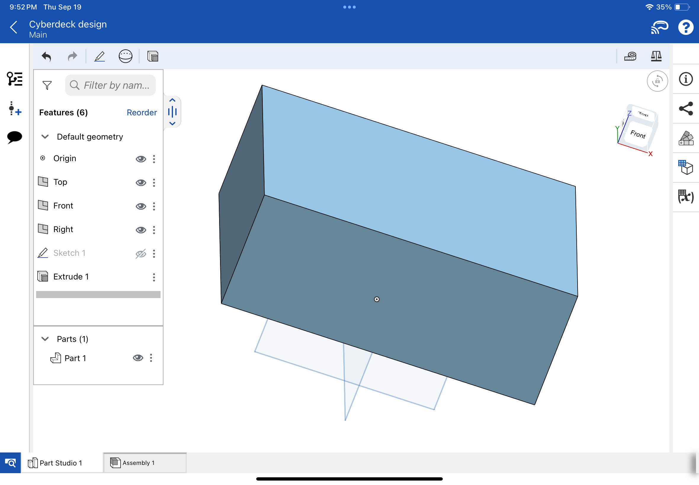

The first step was to sketch a rectangle and extrude it to the required depth for one side of the container.
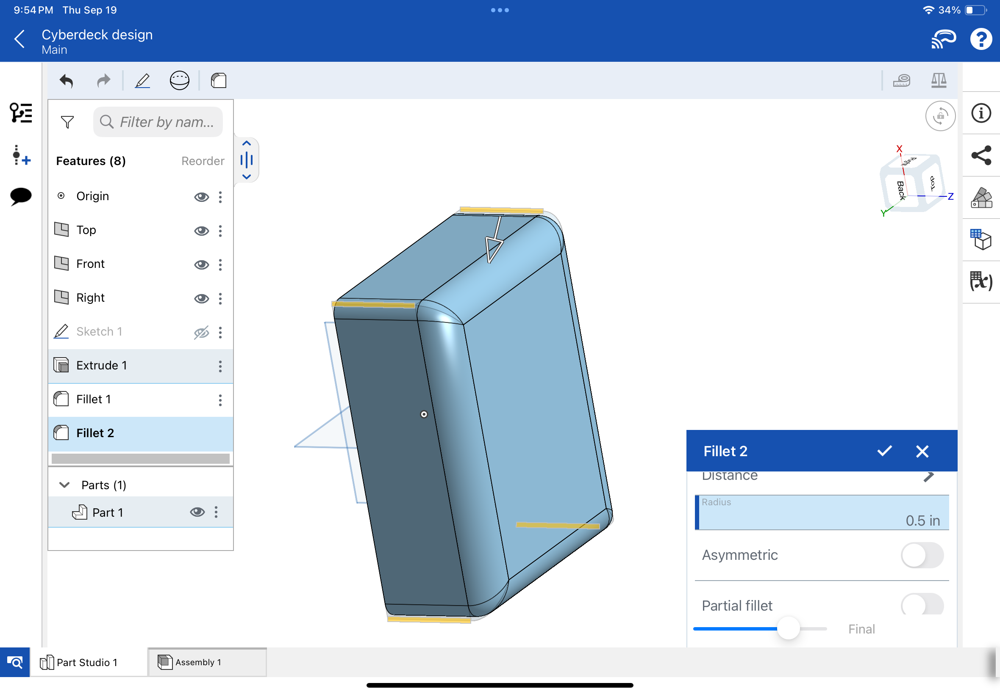
To make it less sharp and more visually appealing, the side and outside edges are filleted.
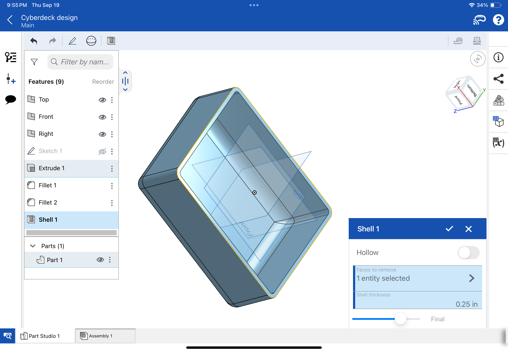
After this, the front face is shelled to make a space for the computer parts inside.
Then, the case is moved slightly away from the center and then mirrored across it to create the other half of the case.
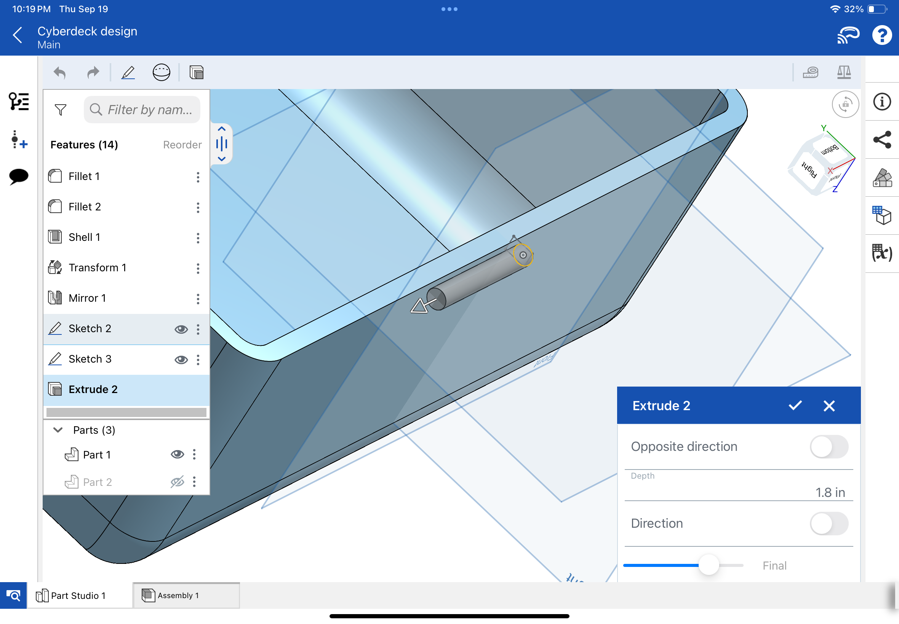
With the body of the case done, the next step is making the hinge to connect the two halves. To start, a circle is extruded from the center of the design.
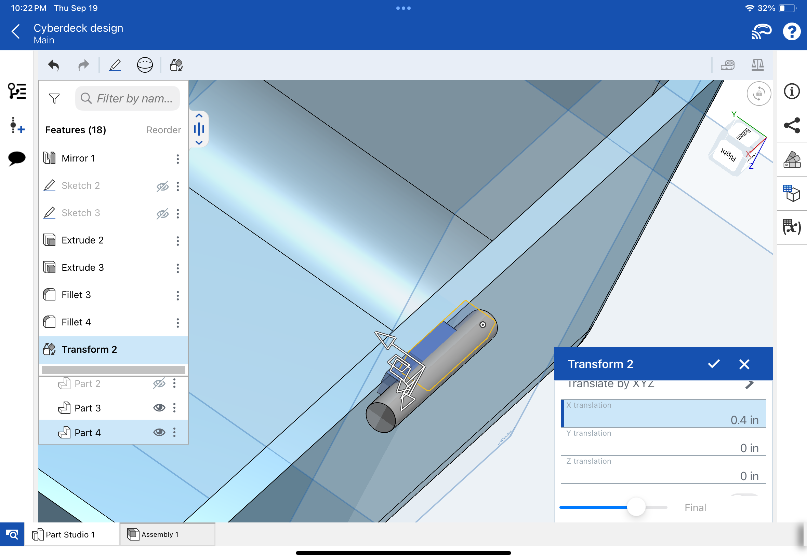
Next, to connect it to the case, a smaller rectangular prism is made and moved to the middle of the cylinder.
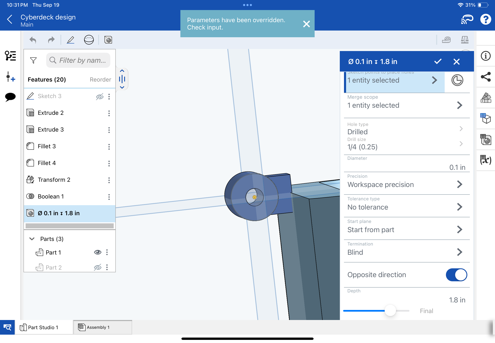
The two parts are then combined, and a hole is made through the cylinder so a rod can be put there in the future
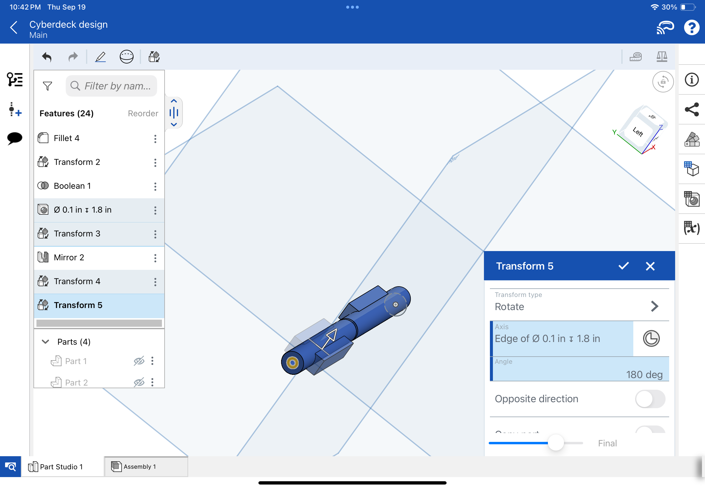
The hinge piece is then mirrored, moved, and rotated to form a second identical piece to connect to the other side
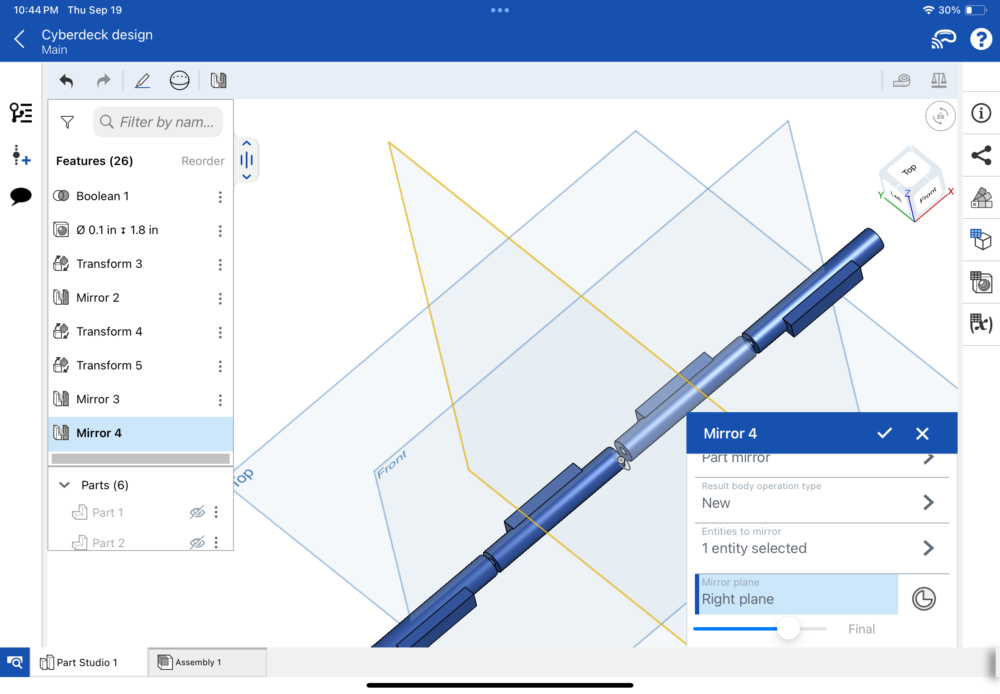
Both of these pieces are now mirrored again so that the hinge extends to both sides.
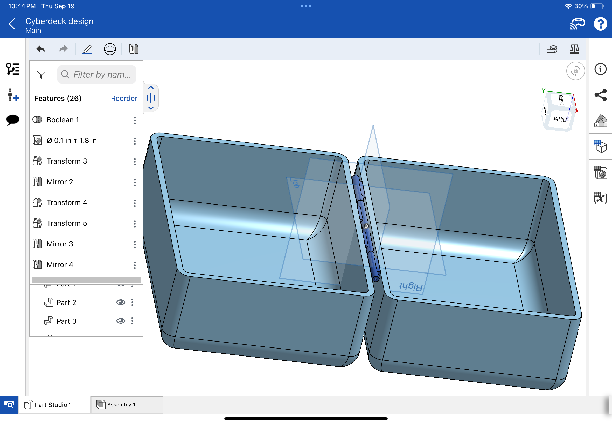
The design is now complete, and can be used if chosen.
2D Logo Design
After that, I designed a possible logo for the project. I do not have significant experience in 2D design, so I used Affinity Designer as it was recommended to me by my teacher.
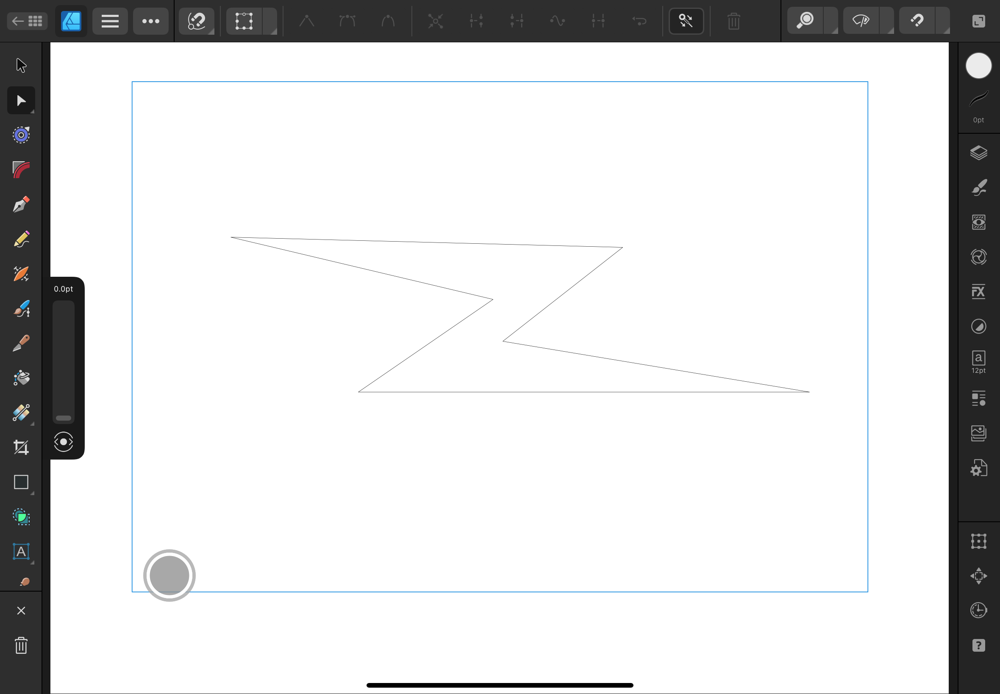
First, a lightning bolt is drawn to be the base of the logo.
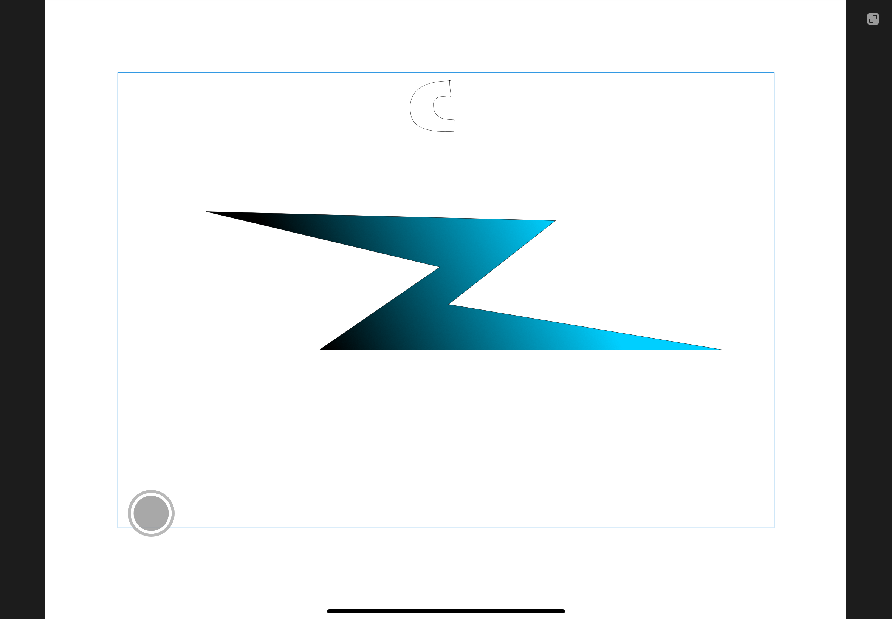
Then, a gradient is applied to the lightning bolt to cive it a splash of color.
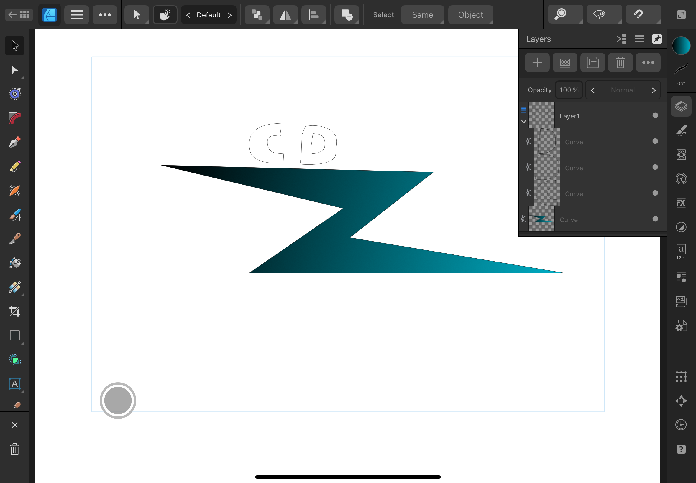
Next, a C and a D are drawn, representing the c and d in CyberDeck
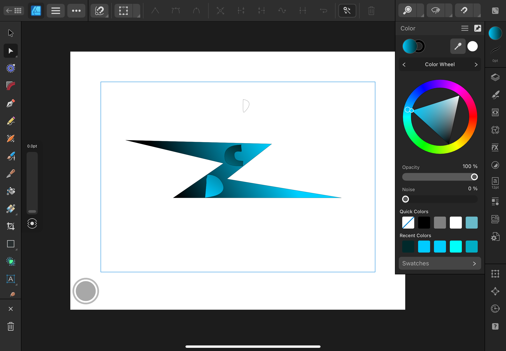
A gradient is added to the letters to make them contrast with the lightning bolt, and they are added to the logo
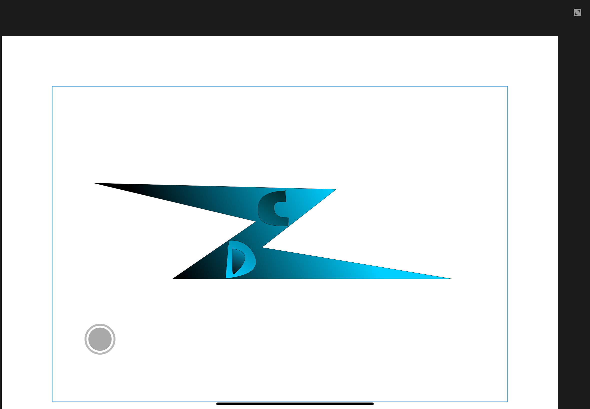
Finally, a hole is added to the inside of the D, and the logo is complete!